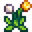
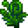
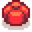
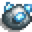
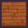

Getting Started
The Player
Controls
Health
Energy
Skills
 Day Cycle
Inventory
Farm Maps
Crops
Shipping
Animals
Fruit Trees
Artisan Goods
Farmhouse
The Cave
Greenhouse
Cabin
Weather
Seasons
 Spring
 Summer
Fall
Winter
Festivals
Monsters
Villagers
Friendship
Marriage
Children
Quests
 Bundles
Achievements
Multiplayer
Modding
Tools
Weapons
Hats
Footwear
Rings
Foraging
Fish
Food
Crafting
Trees
Fertilizer
Artifacts
 Minerals
Furniture
Wallpaper
 Flooring
Pelican Town
Cindersap Forest
The Beach
The Mountain
The Desert
Ginger Island